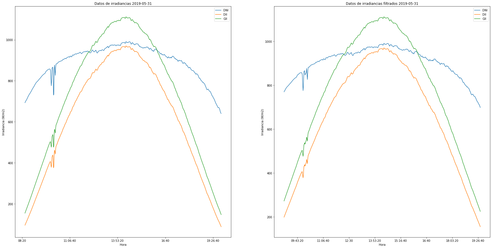
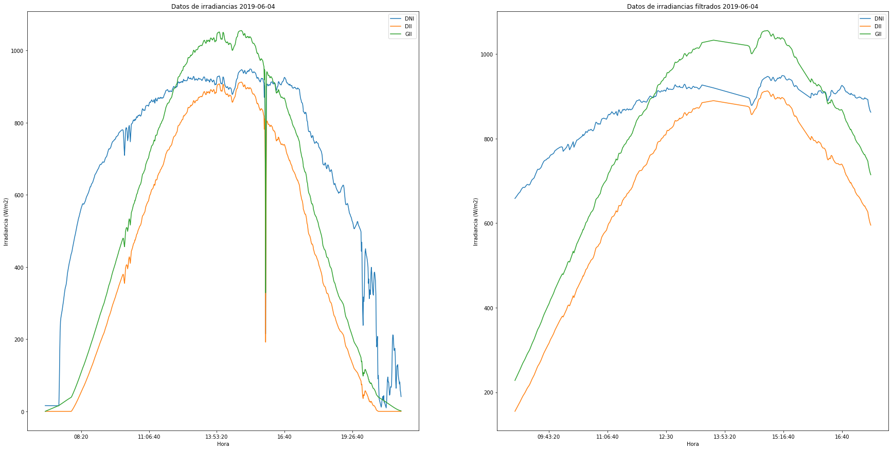

Python 3.7.4 (default, Aug 9 2019, 18:34:13) [MSC v.1915 64 bit (AMD64)]
Type "copyright", "credits" or "license" for more information.
IPython 7.8.0 -- An enhanced Interactive Python.
In [1]: runfile('C:/Users/juanj/OneDrive/Escritorio/repositorio_tfg/Filtrado_Si.py', wdir='C:/Users/juanj/OneDrive/Escritorio/repositorio_tfg')
C:\Users\juanj\Anaconda3\lib\site-packages\pandas\core\ops\__init__.py:1115: FutureWarning: elementwise comparison failed; returning scalar instead, but in the future will perform elementwise comparison
result = method(y)
No handles with labels found to put in legend.
No handles with labels found to put in legend.
No handles with labels found to put in legend.






In [2]: